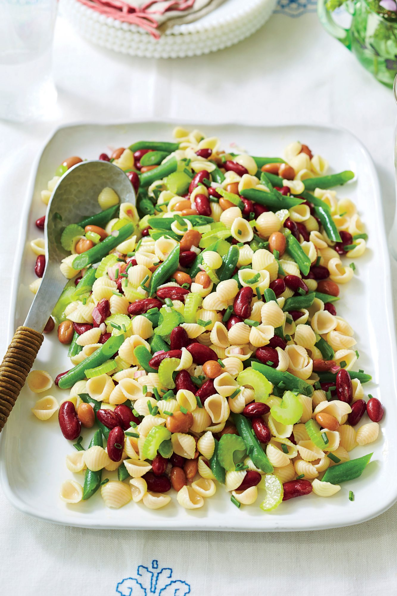

Three-Bean Pasta Salad

Description
We combined two potluck classics—pasta
salad and three-bean salad—to make
one tasty new side dish. Blanched
celery is the unexpected star in this
side dish; it has a tender-crisp
texture and bright green color. Swap
out the canned beans for your
favorite cooked field peas.
Ingredients
- 8 ounces uncooked small shell pasta
- 8 ounces fresh green beans, trimmed and cut into 1-in. pieces (about 2 cups)
- ½ cup thinly sliced celery (about 1 stalk)
- 1 pinto beans, drained and rinsed
- 1 red kidney beans, drained and rinsed
- 1 small shallot, minced
- 3 tablespoons rice wine vinegar
- 1 teaspoon lemon zest plus 2 Tbsp. fresh juice (from 1 lemon)
- 1 teaspoon Dijon mustard
- 1 teaspoon honey
- ¾ cup olive oil
- 1 teaspoon kosher salt
- ½ teaspoon black pepper
- ¼ cup thinly sliced chives
Steps
-
Cook pasta according to package
directions for salted water.
Drain and rinse with cold water;
drain.
-
Cook green beans and celery in
boiling salted water to cover until
tender-crisp, about 2 minutes.
Drain and plunge into ice water
to stop the cooking process; drain.
Combine pasta, green beans, celery,
pinto beans, and kidney beans in a
large bowl.
-
Combine shallot and vinegar in a
medium bowl; let stand about
5 minutes. Add lemon zest, lemon
juice, mustard, and honey,
stirring with a whisk. Gradually
whisk in oil until well combined;
pour over bean mixture. Sprinkle
with salt and pepper; toss gently.
Sprinkle with chives, and serve
immediately.